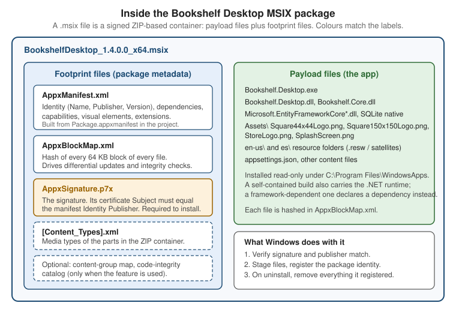

MSIX Packaging & Signing
|
This content was generated with the assistance of AI and should be verified against the official documentation before being relied on in production. |
Shipping a Windows desktop app is two decisions: how the files are laid out on the user’s machine and how the user (and
Windows) can trust them. MSIX answers the first with a container format that installs and removes an app cleanly, and it
answers the second by requiring a digital signature. This page follows Bookshelf Desktop, the running scenario of this
section, from a project in Visual Studio to a signed .msix file: the shape of the package, the manifest that describes
it, the four ways to produce one (single-project MSIX, the Windows Application Packaging Project, packaging with external
location, and the MSIX Packaging Tool), and the signing story that goes with it, from a throw-away test certificate to
Azure Artifact Signing.
The page was written against these versions, current in October 2026:
-
.NET 10 LTS, latest patch 10.0.13, with C# 14. .NET 11 is at release candidate 2, with general availability expected at .NET Conf, 10 to 13 November 2026. Nothing on this page changes with .NET 11.
-
Visual Studio 2026 18.11.1. The single-project MSIX packaging tools are built into Visual Studio 2026 and later; earlier Visual Studio versions need a separate extension.
-
Windows App SDK 2.5.1 for WinUI 3 projects.
-
Windows 11 and Windows 10. Windows 10 reached the end of support on 14 October 2025. The manifest examples target
10.0.19041.0(Windows 10 version 2004) as the minimum, which is also the minimum that packaging with external location needs. -
Microsoft Store Policies 7.20 and the Store behaviour described on the Microsoft Learn code-signing pages, as of October 2026.
Distribution (the Microsoft Store, App Installer, WinGet, ClickOnce) is the subject of the Distribution Channels page of this section, the publish options of .NET itself are on .NET Publishing Options, and doing all of this in a pipeline is on CI/CD with GitHub Actions. This page stops where a signed package exists. The security consequences of packaging (the trust tiers, AppContainer, capabilities) are on Security & App Isolation, and what package identity unlocks for an unpackaged app is on Windows Platform Integration.
What MSIX Is
MSIX is the modern Windows app packaging format. It gives any Windows app a reliable install and uninstall, updates, and access to the Windows features that require package identity. Package identity is the key idea: when an app is packaged, Windows assigns it an identity built from manifest information (name, publisher, version, architecture and a resource identifier), and that identity is what push notifications, background tasks, the Windows AI APIs, Store distribution and enterprise management attach to.
| Capability | What it means for Bookshelf Desktop |
|---|---|
Reliable install and uninstall |
The OS installs the package as one unit and removes everything it registered on uninstall, so no files or registry entries are left behind. |
Differential updates |
The package carries a hash of each 64 KB block of every file, so an update downloads only the blocks that changed. |
Disk space efficiency |
Files shared between packages are managed by Windows, while each app stays independent so one app’s update does not affect another. |
Containerized execution |
The app runs in a lightweight container with a virtual file system and registry. Windows virtualizes or redirects certain writes to reduce the impact on the system. |
Enterprise readiness |
Deployment through Intune, Configuration Manager and the Enterprise Modern App Management CSP. |
Mandatory signature |
An MSIX package must be signed before Windows will install it. |
Source: What is MSIX?
The container is a security and compatibility mechanism, not necessarily a sandbox. A packaged desktop app normally runs in full trust, with the same authority as the user, and the virtualization exists so that old applications keep working and uninstall stays clean. The difference between full trust and an AppContainer app is explained on Security & App Isolation.
Package types and file extensions
MSIX defines four package types and one distribution container. A desktop app is almost always a Main package.
| Type | Purpose | Manifest indicator |
|---|---|---|
Main |
The primary package of an application. It declares applications, capabilities, dependencies and extensions. |
No declaration of another type. |
Framework |
Shared libraries or runtime content, with side-by-side versions. The Windows App SDK framework package is one. |
The |
Resource |
Language-, scale- or other qualifier-specific resources, installed only when they apply to the device or user. |
The |
Optional |
Extra content tied to one Main package. |
A |
Bundle ( |
One distribution artifact containing several MSIX packages of the same package family, so Windows installs only the architecture and resource packages that apply. A bundle is a container, not a fifth deployable type. |
A bundle manifest and a |
Source: MSIX package types
In practice you meet these files. The .msixupload extension is the upload file for Microsoft Store submissions; it is
produced by the Visual Studio Create App Packages wizard or by building with the StoreUpload build mode shown later on
this page.
| File | Use |
|---|---|
|
One package for one architecture. The artifact you sign and sideload. |
|
Several architectures (for example x64 and ARM64) in one file. |
|
The upload file for Partner Center. The Store signs the package after certification. |
|
Not a package: an XML file that points to a package and describes update behaviour. See the Distribution Channels page. |
|
A public certificate / a certificate with its private key, used to trust or to sign. |
Inside a Package
An .msix file is a ZIP-based container. Windows separates the files a package holds into payload files (the app
itself: executables, libraries, assets, configuration, resources) and footprint files (metadata that describes, validates
or supports the payload).

| Footprint file | Role |
|---|---|
|
Declares the package identity, dependencies, capabilities, visual elements and extension points. You author it as |
|
Lists every file with a cryptographic hash for each 64 KB block. Windows uses it for differential updates and for integrity verification. Its |
|
Holds the package signature. All MSIX packages must be signed before installation. |
Other files |
Present only when a feature needs them, such as |
Source: What is MSIX?
Two consequences follow from the block map. First, changing a single byte of a payload file after the package is built invalidates the package, which is a security benefit but also the reason you sign after packaging and never edit a package by hand. Second, SignTool must use the same hash algorithm that built the package. The default of the packaging tools is SHA-256, and SignTool’s own default is not, so you always pass the algorithm explicitly (see below).
The Build, Package, Sign, Publish Flow
Whichever packaging route you choose, the same four stages happen, and keeping them separate in your head makes problems easy to locate. A failure in "package" is a manifest or asset problem, a failure in "sign" is almost always a certificate or publisher problem, and a failure in "publish" is a channel rule.
Release, one platform"] --> B["Binaries, assets,
Package.appxmanifest"] end subgraph Package B --> C["MSBuild packaging targets
or MakeAppx / winapp CLI"] C --> D["BookshelfDesktop_1.4.0.0_x64.msix
unsigned"] end subgraph Sign D --> E{"Which certificate?"} E -- "Test only" --> F["Self-signed,
Subject equals Publisher"] E -- "Outside the Store" --> G["OV certificate or
Azure Artifact Signing"] E -- "Microsoft Store" --> H["Unsigned upload,
the Store re-signs"] F --> I["SignTool + timestamp"] G --> I end subgraph Publish I --> J["Sideload, App Installer,
WinGet, enterprise"] H --> K["Partner Center
submission"] end
The sections below follow the flow: the manifest (what goes into the package), the four packaging routes, the signing decision, and the install side.
Package.appxmanifest
The manifest is an XML file with the schema of the Windows 10 app package manifest. A project template generates
Package.appxmanifest with the placeholders already filled in, and Visual Studio offers a visual designer for it (the
Application, Visual Assets, Capabilities, Declarations and Packaging tabs). Edit the XML directly when you need an
element the designer does not show.
A complete manifest for a full-trust desktop app
This is the manifest of the Bookshelf Desktop WPF app when it is packaged with the Windows Application Packaging Project.
The Identity values are fictitious: CN=Bookshelf Dev is a placeholder publisher that you replace with the subject of
the certificate you will really sign with.
<?xml version="1.0" encoding="utf-8"?>
<Package
xmlns="http://schemas.microsoft.com/appx/manifest/foundation/windows10"
xmlns:uap="http://schemas.microsoft.com/appx/manifest/uap/windows10"
xmlns:uap5="http://schemas.microsoft.com/appx/manifest/uap/windows10/5"
xmlns:rescap="http://schemas.microsoft.com/appx/manifest/foundation/windows10/restrictedcapabilities"
IgnorableNamespaces="uap uap5 rescap">
<Identity Name="Example.BookshelfDesktop"
Publisher="CN=Bookshelf Dev"
Version="1.4.0.0"
ProcessorArchitecture="x64" />
<Properties>
<DisplayName>Bookshelf Desktop</DisplayName>
<PublisherDisplayName>Bookshelf</PublisherDisplayName>
<Logo>Images\StoreLogo.png</Logo>
</Properties>
<Dependencies>
<TargetDeviceFamily Name="Windows.Desktop" MinVersion="10.0.19041.0" MaxVersionTested="10.0.26100.0" />
</Dependencies>
<Resources>
<Resource Language="en-US" />
<Resource Language="es" />
</Resources>
<Applications>
<Application Id="App"
Executable="Bookshelf.Desktop.exe"
EntryPoint="Windows.FullTrustApplication">
<uap:VisualElements DisplayName="Bookshelf Desktop"
Description="Manage your book collection."
BackgroundColor="transparent"
Square150x150Logo="Images\Square150x150Logo.png"
Square44x44Logo="Images\Square44x44Logo.png" />
<Extensions>
<uap5:Extension Category="windows.startupTask" Executable="Bookshelf.Desktop.exe"
EntryPoint="Windows.FullTrustApplication">
<uap5:StartupTask TaskId="BookshelfSync" Enabled="false" DisplayName="Bookshelf sync" />
</uap5:Extension>
</Extensions>
</Application>
</Applications>
<Capabilities>
<rescap:Capability Name="runFullTrust" />
</Capabilities>
</Package>Source: Grant package identity by packaging with external location manually (the manifest structure) and Package a desktop app from source code using Visual Studio
What each part does
| Element or attribute | Meaning and pitfalls |
|---|---|
|
The package name. It is part of the package identity and of the package family name. In a Store submission it must be the identity Partner Center assigns to the reserved app name, and Visual Studio can associate the project with the reserved name so the value is filled in for you. |
|
The publisher, written as a certificate subject (CN=<name>, O=<organization>, C=<country>). It must match the Subject of the certificate that signs the package, character for character. See the certificate sections below. |
|
Four-part version |
|
|
|
Display name, publisher display name and logo, shown in the Store and installer UI. |
|
|
|
The languages the package declares. They must agree with the localization of the app; see Globalization & Localization. |
|
The executable inside the package and, for a full-trust desktop app, the entry point |
|
Tile name, description, background colour and the logo images. The |
|
Windows features the app registers for: startup tasks, file type associations, protocol activation, share targets, app execution aliases and so on. They live in the manifest and need package identity to work. |
|
What the app may access. |
The runFullTrust capability and the difference between uap10:TrustLevel="mediumIL" and appContainer are covered in
detail on Security & App Isolation. The point for packaging is that the
manifest, not the project file, decides which tier the app runs in.
Visual assets
A package needs the logo files named in the manifest or the build fails (or, worse, the app installs with a blank tile).
The template creates an Images (or Assets) folder; every file must have the build action Content so that it lands in
the package. The Windows Application Packaging Project can generate the full set of scaled images from one source image.
The sizes you must provide for a desktop app are:
| Asset | Used for |
|---|---|
|
The package logo in the Store listing and installer UI (the |
|
The app-list entry, the taskbar, and Start search results, with scale and target-size variants. |
|
The medium Start tile. |
|
Optional larger tiles. |
|
A splash for WinUI and other apps that declare one. |
Localizing the manifest
Strings in the manifest (display name, description) are localized through resource references of the form
ms-resource:AppDisplayName and a Strings\en-US\Resources.resw file, so the display name matches the Windows display
language. The Resources element must list the languages. The details of resource loading are on
Globalization & Localization.
Choosing a Packaging Route
There are four ways to get an MSIX for a desktop app, plus the option of not packaging at all. The right one depends on the stack and on whether you own the source.
| Route | Applies to | Produces | Notes |
|---|---|---|---|
Single-project MSIX |
WinUI 3 apps (Windows App SDK) |
A full MSIX from the app project alone |
One executable per package. The manifest and images live in the app project. |
Windows Application Packaging Project |
WPF, WinForms and other desktop apps with source |
A full MSIX from a separate packaging project that references the app |
Can combine several executables in one package. Supported on Windows 10 version 1607 and later; targets Windows 10 Anniversary Update (10.0.14393) or a later release. |
Packaging with external location (sparse) |
Any existing app that already has an installer |
A small identity-only package registered next to the existing installation |
Gives package identity without moving the files into a container. Needs Windows 10 version 2004 or later. |
MSIX Packaging Tool |
An existing installer (MSI, EXE, App-V) without source |
A full MSIX converted from the installer |
An IT-pro tool: captures what the installer does on a clean machine. |
Unpackaged |
WPF, WinForms, WinUI |
No MSIX |
Published with |
Source: Choose a distribution path (the packaged / external-location / unpackaged vocabulary) and the pages cited in each section below.
A good default for new code: WinUI 3 apps use single-project MSIX; WPF and WinForms apps that want a Store or MSIX presence use the Windows Application Packaging Project; a WPF or WinForms app that must keep its own installer but needs a Windows feature that requires identity uses an external-location package.
Single-Project MSIX for WinUI 3
Single-project MSIX lets a WinUI 3 desktop app build into an MSIX without a separate packaging project. It is the default for the WinUI Blank App (Packaged) template that ships with the Windows App SDK. Before it existed, a packaged WinUI app needed an additional Windows Application Packaging Project in the solution; that project is no longer needed, and the selection of a packaging project as the startup project goes away.
-
The single-project MSIX tools are built into Visual Studio 2026 and later. Earlier Visual Studio versions need the Single-project MSIX Packaging Tools extension from the Marketplace.
-
The supported project types are the WinUI templates for C# and C++.
-
Limitation: single-project MSIX supports only one executable in the generated package. If you must combine several executables, keep using a Windows Application Packaging Project.
-
Single-project MSIX does not currently produce
.msixbundlefiles, only a single.msix. A bundle can be created from several.msixfiles with a separate tool, such as the MSIX Bundler GitHub Action.
The project file
The Bookshelf.WinUI project switches the tooling on with EnableMsixTooling. The other properties are the ones you saw on
WinUI 3 & the Windows App SDK.
<Project Sdk="Microsoft.NET.Sdk">
<PropertyGroup>
<OutputType>WinExe</OutputType>
<TargetFramework>net10.0-windows10.0.19041.0</TargetFramework>
<TargetPlatformMinVersion>10.0.17763.0</TargetPlatformMinVersion>
<RootNamespace>Bookshelf.WinUI</RootNamespace>
<Platforms>x64;ARM64</Platforms>
<RuntimeIdentifiers>win-x64;win-arm64</RuntimeIdentifiers>
<PublishProfile>Properties\PublishProfiles\win-$(Platform).pubxml</PublishProfile>
<UseWinUI>true</UseWinUI>
<Nullable>enable</Nullable>
<ImplicitUsings>enable</ImplicitUsings>
<!-- The single-project MSIX switch: the manifest and images live in this project -->
<EnableMsixTooling>true</EnableMsixTooling>
</PropertyGroup>
<ItemGroup>
<PackageReference Include="Microsoft.WindowsAppSDK" Version="2.5.1" />
<PackageReference Include="CommunityToolkit.Mvvm" Version="8.4.2" />
</ItemGroup>
<ItemGroup>
<!-- Every file named in Package.appxmanifest must be packaged as Content -->
<Content Include="Images\*.png" />
</ItemGroup>
</Project>When you convert an existing solution, the documented steps are: add EnableMsixTooling (and a publish profile property)
to the application project; move Package.appxmanifest and the Images folder from the old packaging project into the
application project and set the images' build action to Content; delete the packaging project; and tick the Deploy
check box for every configuration and platform combination in Configuration Manager (using the Active solution
configuration and Active solution platform lists at the top). On Visual Studio 2026 and later you also add a
Properties\launchSettings.json with a profile whose commandName is MsixPackage, so that F5 deploys and starts the
packaged app.
{
"profiles": {
"Bookshelf.WinUI (Package)": {
"commandName": "MsixPackage",
"alwaysReinstallApp": false,
"allowLocalNetworkLoopbackProperty": true,
"nativeDebugging": false
}
}
}Source: Package your app using single-project MSIX (the page lists further optional properties of the profile, such as remote debugging)
Building the package from the command line
Visual Studio builds the package when you deploy or use Package and Publish. From a terminal or CI, call MSBuild with
GenerateAppxPackageOnBuild. Without that property the project builds, but no MSIX is produced.
# Sideload package for one architecture, unbundled, written to a Packages folder.
msbuild .\Bookshelf.WinUI\Bookshelf.WinUI.csproj `
/restore `
/p:Configuration=Release `
/p:Platform=x64 `
/p:AppxPackageDir="Packages\" `
/p:UapAppxPackageBuildMode=SideloadOnly `
/p:AppxBundle=Never `
/p:GenerateAppxPackageOnBuild=trueThe properties that decide what kind of package comes out are these. The same properties appear again on the CI/CD page.
| MSBuild property | Effect |
|---|---|
|
Actually produce the MSIX during the build. |
|
A package for sideloading, enterprise and App Installer distribution. |
|
A |
|
Do not create / create an |
|
The architectures in the bundle (the Learn page writes the value with a vertical bar). |
|
The output folder for packages. |
|
Do not sign during the build. Used for Store uploads, because the Store signs after certification, and for builds that you sign afterwards with SignTool or Artifact Signing. |
|
The path of the |
The Learn page also builds a Store bundle for x86 and x64 in one MSBuild call by setting Platform=x86, which selects the
solution configuration that invokes the packaging target, together with AppxBundlePlatforms. For a single-project app
that targets x64 and ARM64, the same idea applies with the platforms your project defines.
The Windows Application Packaging Project for WPF and WinForms
WPF and Windows Forms projects have no built-in MSIX tooling, so Visual Studio provides a Windows Application Packaging
Project (a .wapproj, often called WAP): a project with no code of its own whose job is to generate and configure the
package for the desktop project it references. Despite the name, it works with .NET desktop apps, including .NET 10 WPF
and WinForms.
To see the project template, one of these must be installed: the Universal Windows Platform development workload, or the optional component MSIX Packaging Tools in the .NET desktop development workload (or in the ASP.NET and web development / .NET Core workload that offers it). The Visual Studio features the project gives you are an automatic generator of visual assets, a visual designer for the manifest, a wizard to create the package or bundle, and, for the Store, the ability to assign an identity from a name you already reserved in Partner Center.
Adding the packaging project
-
Open the solution that contains the WPF project (Bookshelf.Desktop).
-
Add a Windows Application Packaging Project, in the language of the app (C# for a C# app). You do not add code to it.
-
Choose the Target Version; set the Minimum Version to Windows 10 Anniversary Update or later.
-
Set the packaging project as the startup project.
-
Right-click Dependencies under the packaging project, choose Add Project Reference and select the WPF project. If the package holds several desktop apps, right-click the one that should start from the tile under Applications and choose Set as Entry Point.
-
Build the packaging project. If you get errors, open Configuration Manager and make sure all projects target the same platform. To package x64, the Learn page documents adding the x64 configuration through Configuration Manager before adding the packaging project, or removing the x64 entries from the
.slnand adding them again afterwards. -
Use the Create App Packages wizard (right-click the packaging project, Package and Publish) to produce the MSIX, a bundle, or an
.msixuploadfor the Store.
The resulting solution layout is easy to recognise:
Bookshelf.sln
|-- Bookshelf.Core (class library)
|-- Bookshelf.Data (EF Core, SQLite)
|-- Bookshelf.Desktop (WPF app, net10.0-windows)
`-- Bookshelf.Desktop.Package (Windows Application Packaging Project)
Package.appxmanifest (identity, capabilities, extensions)
Images\ (generated logo assets)
Dependencies\Applications (a project reference to Bookshelf.Desktop)The Learn page for this project was last updated in 2024. It still describes the Visual Studio 2017 15.5 and later
template and does not mention .NET 10 by name, so test the packaging project with your own .NET 10 solution rather than
assuming a feature list. Every WPF and WinForms desktop app packaged this way is a full-trust app: the manifest carries
runFullTrust and the executable runs with the user’s authority.
Packaging with External Location (Sparse Packages)
Sometimes an app already has an installer, an update mechanism and a file layout it cannot change, but it needs a Windows feature that requires package identity. Starting in Windows 10 version 2004, you can grant identity by building and registering a package with external location: a small MSIX that contains the manifest (and little else) and points to the files of the existing installation. You do not move the app into a container, and the app is not virtualized.
| Aspect | Detail |
|---|---|
What the package holds |
A manifest with |
Trust level |
|
|
|
Connection to the exe |
The executable carries an application manifest (side-by-side manifest) with an |
Registration |
|
Signing |
The package must be signed with a certificate that is trusted on the target machine, exactly like any MSIX. |
Visual Studio |
The Windows Application Packaging Project and Package with External Location extension builds the identity package for a single app project and adds a certificate wizard and registration scripts. |
Source: Grant package identity by packaging with external location manually and Grant package identity by packaging with external location
The manifest, the side-by-side msix element and the registration code for Bookshelf Desktop are shown on
Windows Platform Integration, where the features that identity
unlocks are the subject. The packaging-specific parts are the build and the registration commands:
# Build the identity package from a folder that contains AppxManifest.xml.
# /nv skips validation of the file paths referenced in the manifest.
MakeAppx.exe pack /o /d .\identity /nv /p .\out\BookshelfIdentity.msix
# Register it next to the existing installation (per user).
Add-AppxPackage -Path .\out\BookshelfIdentity.msix -ExternalLocation "C:\Program Files\Bookshelf Desktop"
# Unregister on uninstall.
Get-AppxPackage Example.BookshelfDesktop | Remove-AppxPackageThe registration errors you will meet, from the same page:
| Error | Cause | Fix |
|---|---|---|
|
A self-signed certificate is not in the Trusted People store. |
Import the public |
|
The exact same version of the package is already registered. |
Unregister it first, then register again. |
|
Registration succeeded but identity is missing at runtime, because |
Make the three values identical in both manifests. |
Identity absent, no error |
The |
Pass the exact install folder. |
|
The manifest is malformed or an attribute is missing. |
Run |
For deeper diagnostics, the deployment log is in Event Viewer under Applications and Services Logs / Microsoft / Windows / AppxDeployment-Server.
The MSIX Packaging Tool
When you have an installer but no source (a vendor MSI, a legacy EXE, an App-V package), the MSIX Packaging Tool repackages it as MSIX. It offers an interactive UI and a command line, and it does not need access to the source code.
-
Application package: runs an installer (MSI, EXE, App-V 5.x or a custom script) on a clean machine while the tool captures what it installs, and writes an MSIX.
-
Modification package: creates a modification package for an existing MSIX package.
-
Package editor: opens an MSIX to view and edit its content and properties.
The tool needs Windows 10 version 1809 or later and administrator rights, and it is available from the Microsoft Store and
from WinGet (winget install "MSIX Packaging Tool"). It can also be downloaded for offline use. Conversion is best done in
a virtual machine or a clean device, because the tool records everything the installer changes. A converted app
sometimes needs compatibility fixes that the Package Support Framework applies without changing the application source.
For Bookshelf Desktop, whose source you own, the MSIX Packaging Tool is not the right route: build the package from the project. The tool is for third-party and legacy software that you must ship as MSIX for a managed environment.
Source: MSIX Packaging Tool overview
Windows App SDK Runtime Deployment
A WinUI 3 app depends on the Windows App SDK runtime, and how that dependency reaches the machine depends on how you package and publish.
| Framework-dependent (default) | Self-contained | |
|---|---|---|
What ships |
Only your app. The Windows App SDK runtime and framework packages are installed on the machine. |
The app carries the Windows App SDK with it. |
Packaged (MSIX) |
The framework packages are installed automatically as dependencies of the packaged app; you call the deployment API to initialize it. |
No initialization needed. |
External location or unpackaged |
Installed by the Windows App SDK runtime installer; initialize with the bootstrapper API. |
See the self-contained deployment guide for the automatic reg-free WinRT behaviour. |
Servicing |
The runtime is serviced centrally, with a small risk that an update introduces a regression. |
You control the version; a runtime fix needs a new release of your app. |
Size and load time |
Smaller. |
Larger, and for unpackaged apps slower to load and heavier on memory, because code pages are not shared. |
Two rules of thumb from the same page: a packaged WinUI app should normally stay framework-dependent, because the MSIX
dependency mechanism installs and shares the runtime for you; and PublishSingleFile works only for apps that are both
unpackaged and self-contained, so it does not combine with MSIX. For multiple architectures, create an .msixbundle
containing x64 and ARM64 packages; the Store and App Installer pick the right architecture at install time. Native ARM64
builds are recommended over relying on x64 emulation on Windows 11 ARM devices. The .NET publish matrix for WPF, WinForms
and WinUI is on the .NET Publishing Options page.
Why Signing Matters and the Publisher Rule
An MSIX package must be signed before Windows will install it, and the signature has two jobs: it proves the package has not been changed since it was signed, and it ties the package to a publisher. The tie is enforced by a single rule that causes most first-time signing failures:
The Subject of the signing certificate must match the Publisher attribute of the
Identityelement in the manifest.
If the manifest says Publisher="CN=Bookshelf Dev", the certificate’s subject must be exactly CN=Bookshelf Dev. If the
subject is CN=Bookshelf Dev, O=Bookshelf, C=US, the manifest must say so with the same attribute values, in the same
order. Windows compares the strings, so even extra spaces matter.
| Symptom | Likely cause |
|---|---|
SignTool reports an error that the publisher does not match |
The certificate subject differs from the manifest |
The package signs, but the install says the certificate is not trusted |
The certificate was not added to a trusted store on the target machine (self-signed) or the chain does not reach a trusted root. |
An update is refused although it is signed |
The new package was signed by a different publisher from the installed package. Updates must keep the publisher. |
The Store rejects the upload |
The manifest identity does not match the identity Partner Center assigned to the reserved app. |
For a Store submission the publisher is the one Partner Center assigns (the Publisher in the app identity page), and the Store re-signs the package, so the upload does not need your own certificate.
Certificates for Testing
A self-signed certificate is the quickest way to produce an installable package for your own machines. It is not suitable for public distribution: only users who install and trust your certificate can run the app.
Create the certificate with the subject taken from the manifest (here the fictitious CN=Bookshelf Dev). The extended key
usage 1.3.6.1.5.5.7.3.3 marks it as a code-signing certificate, and the empty basic-constraints extension marks it as an
end entity, not a certificate authority.
# Elevated PowerShell. The subject must equal Identity Publisher in the manifest.
New-SelfSignedCertificate -Type Custom `
-KeyUsage DigitalSignature `
-CertStoreLocation "Cert:\CurrentUser\My" `
-TextExtension @("2.5.29.37={text}1.3.6.1.5.5.7.3.3", "2.5.29.19={text}") `
-Subject "CN=Bookshelf Dev" `
-FriendlyName "Bookshelf Desktop test certificate"Export it to a .pfx for signing. Export-PfxCertificate requires either -Password or -ProtectTo. The password is read
from an environment variable, never typed into a script or committed to the repository.
# The thumbprint and the password come from the environment, not from the script.
$password = ConvertTo-SecureString -String $env:BOOKSHELF_PFX_PASSWORD -Force -AsPlainText
Export-PfxCertificate -Cert "Cert:\CurrentUser\My\$env:BOOKSHELF_CERT_THUMBPRINT" `
-FilePath .\BookshelfTest.pfx -Password $passwordTo install an app signed with that certificate, the machine must trust it. Export the public certificate (the .cer
file) and import that, and keep the .pfx private because it holds the private key. Importing into LocalMachine affects
the trust of all users of the machine, which is why the Learn page recommends removing such certificates when they are
no longer needed.
$cert = Get-PfxCertificate -FilePath .\BookshelfTest.pfx
Export-Certificate -Cert $cert -FilePath .\BookshelfTest.cer
# Current user only:
Import-Certificate -FilePath .\BookshelfTest.cer -CertStoreLocation Cert:\CurrentUser\TrustedPeople
# Whole machine (elevated PowerShell):
Import-Certificate -FilePath .\BookshelfTest.cer -CertStoreLocation Cert:\LocalMachine\TrustedPeopleSource: Grant package identity by packaging with external location manually (the Trusted People import) and Create a certificate for package signing
Visual Studio can create this test certificate for you in the Create App Packages wizard (Select signing method,
Create). The Learn CI page suggests leaving the password blank for a throw-away CI test certificate and keeping the
resulting .pfx out of source control, because git ignores it by default and GitHub secrets are the place for it.
Signing with SignTool
SignTool is the command-line tool of the Windows SDK for signing and for verifying and timestamping signatures. It lives in
the bin\<sdk version>\x64 folder of the SDK, with x86 and Arm64 variants. When you build with Visual Studio you do not
need it, because the packaging wizard signs for you; you use SignTool in pipelines and when you sign a package someone
else built.
Three rules from the documentation matter most:
-
Name the hash algorithm. It must be the one the package was built with.
MakeAppxand the MSBuild packaging targets use SHA-256 by default, and SignTool’s own default is SHA-1, so always pass/fd SHA256. The block map records the algorithm inHashMethod(SHA-256 is thexmlenc#sha256value). -
Sign a bundle once. SignTool signs every package inside an
.msixbundlerecursively. -
Timestamp every signature (next section).
Sign with a PFX file
# The certificate file and its password come from the environment (set by the CI system or the shell).
& "${env:ProgramFiles(x86)}\Windows Kits\10\bin\10.0.26100.0\x64\signtool.exe" sign `
/fd SHA256 `
/f $env:SIGNING_PFX_PATH `
/p $env:SIGNING_PFX_PASSWORD `
/tr http://timestamp.example.com `
/td SHA256 `
.\Packages\BookshelfDesktop_1.4.0.0_x64.msixThe command-line options used above:
| Option | Meaning |
|---|---|
|
The file digest algorithm. Must match the package. |
|
The |
|
The password of the |
|
The RFC 3161 timestamp server. |
|
The digest algorithm of the timestamp request. |
The timestamp URL above is a placeholder: use the address your certificate authority publishes (or the Microsoft timestamp service when you sign with Artifact Signing, described below). The password reaches the command line from an environment variable, but remember that a process command line can be visible to other processes on the machine; on a shared build agent prefer a signing service that never exposes a key (Artifact Signing, or a hardware token or cloud HSM driven by your CA’s client), and mask the secret in logs.
Verify
# /pa selects the default Authenticode verification policy, /v prints details.
signtool verify /pa /v .\Packages\BookshelfDesktop_1.4.0.0_x64.msix
Get-AuthenticodeSignature .\Packages\BookshelfDesktop_1.4.0.0_x64.msix | Format-List Status, SignerCertificate, TimeStamperCertificateSource: SignTool (the verify command)
Sign during the build instead
If you prefer the build to sign, MSBuild accepts PackageCertificateKeyFile (the .pfx), and the password can be passed in
as PackageCertificatePassword. The Learn CI workflow decodes a Base64 secret to a temporary .pfx on the runner, passes
the file to MSBuild, and deletes it afterwards. This works, but the key sits on the runner’s disk for the length of the
build, which is the reason the next section exists.
Timestamping
A timestamp is a countersignature from a timestamp authority that records when the package was signed. Without one, the signature is valid only while the signing certificate is valid: when the certificate expires, Windows treats the binary as unsigned. With a timestamp, the signature stays verifiable after the certificate expires, because the verifier can confirm that the certificate was valid at signing time.
-
Always pass an RFC 3161 timestamp with
/trand/td SHA256. The older/toption uses the legacy Authenticode protocol, and the documentation recommends RFC 3161. -
Use SHA-256 for both the file digest and the timestamp digest; SHA-1 is deprecated and distrusted for code signing.
-
A previously signed file can be timestamped later with
signtool timestamp. -
Timestamping is critical with Azure Artifact Signing, whose certificates are valid for only three days. Without a timestamp the signature would expire almost immediately.
Azure Artifact Signing
Azure Artifact Signing (formerly Trusted Signing) is Microsoft’s fully managed signing service, and the one Microsoft
recommends for apps distributed outside the Store. Some URLs, packages and product pages still carry the old
trusted-signing name, and the GitHub Action in the Microsoft documentation used to be called trusted-signing-action.
What it gives you:
-
Zero-touch certificate lifecycle inside FIPS 140-3 level 3 certified hardware security modules. You never hold a private key, so there is no key to lose or leak, and no USB token to plug into a build agent.
-
Short-lived certificates (three days of validity), which is why timestamping is required.
-
Content-confidential signing: your file never leaves the machine; the service signs a digest.
-
Integration with SignTool, GitHub Actions, Azure DevOps, PowerShell for Authenticode and an SDK.
-
Identity validation by Microsoft before any certificate is issued; plan for a few business days.
The resource structure is a resource group in an Azure subscription that contains an Artifact Signing account, which in turn has two resources: an identity validation and a certificate profile. You choose a Basic or Premium SKU for the account. Documented pricing starts at about 9.99 US dollars a month.
| Item | Detail |
|---|---|
Availability |
Organizations in the USA, Canada, the European Union and the United Kingdom. Individual developers in the USA and Canada only. |
Not eligible |
Developers outside those regions use an OV certificate from a certificate authority instead. |
Permission |
The identity that signs needs the Artifact Signing Certificate Profile Signer role on the account or the certificate profile. |
Not for the Store |
Artifact Signing is a route for non-Store distribution. Store MSIX submissions are signed by Microsoft after certification. |
SmartScreen |
Does not give instant trust: reputation builds over time (see below). |
Signing a package with SignTool and the Artifact Signing dlib
SignTool talks to the service through a client library (a dlib). The documentation lists the requirements:
SignTool.exe from a Windows SDK of version 10.0.2261.755 or later (the 20348 SDK is not supported), the .NET 8 runtime,
the Visual C++ Redistributable and the Artifact Signing client dlib, which an installer available through WinGet
(winget install -e --id Microsoft.Azure.ArtifactSigningClientTools) sets up. A small JSON file points the dlib at the
account:
{
"Endpoint": "<artifact-signing-regional-endpoint>",
"CodeSigningAccountName": "<account-name>",
"CertificateProfileName": "<certificate-profile-name>"
}The endpoint must be the regional URI that matches the region of the account and the certificate profile; a mismatch
commonly produces a 403 Forbidden error. Authentication uses DefaultAzureCredential, so on a developer machine the
signed-in Azure CLI or Visual Studio account is used, and in a pipeline the identity is supplied through environment
variables or a federated credential.
& "$env:SIGNTOOL_PATH" sign /v /fd SHA256 `
/tr "http://timestamp.acs.microsoft.com" /td SHA256 `
/dlib "$env:ARTIFACT_SIGNING_DLIB_PATH\Azure.CodeSigning.Dlib.dll" `
/dmdf ".\metadata.json" `
.\Packages\BookshelfDesktop_1.4.0.0_x64.msixThe recommended timestamp authority is the Microsoft one shown above, because the short certificate lifetime makes the timestamp the part of the signature that has to last.
Signing in GitHub Actions
The GitHub Action authenticates with a federated (OIDC) credential, so no key or password is stored in the repository. The three identifiers are not secrets in the cryptographic sense, but the Azure documentation and this page treat them as repository secrets.
name: sign-bookshelf
on:
workflow_dispatch:
permissions:
id-token: write
contents: read
jobs:
sign:
runs-on: windows-latest
steps:
- uses: actions/checkout@v4
# ... build and package the MSIX into .\Packages here (see the CI/CD page) ...
- name: Azure login (OIDC)
uses: azure/login@v3
with:
client-id: ${{ secrets.AZURE_CLIENT_ID }}
tenant-id: ${{ secrets.AZURE_TENANT_ID }}
subscription-id: ${{ secrets.AZURE_SUBSCRIPTION_ID }}
- name: Sign with Artifact Signing
uses: azure/artifact-signing-action@v2
with:
endpoint: ${{ vars.ARTIFACT_SIGNING_ENDPOINT }}
signing-account-name: ${{ vars.ARTIFACT_SIGNING_ACCOUNT }}
certificate-profile-name: ${{ vars.ARTIFACT_SIGNING_PROFILE }}
files-folder: ${{ github.workspace }}\Packages
files-folder-filter: msix
file-digest: SHA256
timestamp-rfc3161: http://timestamp.acs.microsoft.com
timestamp-digest: SHA256The manifest Publisher of the package must equal the subject of the certificate that the certificate profile issues. Read
that subject from the certificate profile once identity validation succeeds and put it in Package.appxmanifest; do not
guess it. Azure DevOps uses the AzureArtifactSigning task from the Visual Studio Marketplace extension instead of the
action. A full pipeline (build, package, sign, release) is on the CI/CD with GitHub Actions page.
Choosing a Certificate: OV, EV and SmartScreen
A signed package from a trusted certificate tells the user and Windows who published it. It does not by itself make SmartScreen quiet, and that is the most common misunderstanding about code signing.
| Option | Cost (as documented) | SmartScreen on first download | Use when |
|---|---|---|---|
Microsoft Store (MSIX) |
Free |
No warning: Microsoft re-signs and the package carries Microsoft reputation. |
The default for most new apps. |
Microsoft Store (MSI or EXE) |
A certificate chaining to a CA in the Microsoft Trusted Root Program |
No SmartScreen prompt during the Store install, though UAC may still appear. |
An existing Win32 app submitted as an installer. |
Azure Artifact Signing |
About 9.99 US dollars a month |
Reputation builds over time; initial warnings are expected. |
Recommended outside the Store, in the eligible regions. |
OV certificate |
About 150 to 300 US dollars a year |
The same as Artifact Signing. |
Outside the eligible regions, or when a customer requires a particular CA. Private keys must be on an HSM or hardware token since June 2023. |
EV certificate |
About 400 US dollars and up a year |
The same as OV since 2024; no longer an instant bypass. |
Only for enterprise procurement or trust contexts that ask for EV. Not recommended for SmartScreen. |
Self-signed certificate |
Free |
Blocks installation for the public. |
Development and testing, or enterprise with managed certificate trust. |
No signature |
Free |
A strong SmartScreen block; enterprises may block it entirely. |
Never for public distribution. |
How SmartScreen reputation works
SmartScreen evaluates two signals when a user downloads and runs a file: the publisher reputation (is the file signed, by a known certificate?) and the file-hash reputation (has this exact file been downloaded without signs of malicious behaviour?). Even a signed, brand-new binary can show a warning until its hash or its publisher certificate accumulates enough positive evidence. What follows from the Microsoft documentation:
-
EV certificates no longer bypass SmartScreen. That behaviour was removed in 2024. EV may still matter to enterprise procurement, but paying the premium solely to avoid warnings is no longer justified.
-
Reputation builds organically through download volume. There is no exact threshold; the documentation says it can take several weeks and hundreds of clean installs from a wide audience. There is no mechanism to submit a file for consumer SmartScreen review.
-
Signing every release with a consistent identity lets reputation carry over from one version to the next. Unsigned files start from zero on every version, and changing the signing identity resets the publisher signal.
-
Do not modify signed files after signing, and do not sign potentially unwanted applications, or the certificate can acquire negative reputation.
-
On Windows 11, Smart App Control may supersede SmartScreen application reputation. It blocks unsigned executables unless they have positive reputation, and its signature checks apply to all executables, not just those downloaded from the Internet.
-
The practical way to avoid the warning is the Store: Store-installed apps are never subject to SmartScreen download warnings.
-
Enterprise environments can differ: the bypass can be disabled by policy, and IT administrators may distribute from trusted intranet locations or submit files through the Microsoft Security Intelligence portal.
Tell early adopters of a new, signed app that they may see a SmartScreen prompt, and that they should proceed only after checking the publisher name shown in it.
Sideloading and Developer Mode
Sideloading means installing a package that does not come from the Microsoft Store. Windows allows it for a package whose signature chains to a certificate the device trusts. There are three situations:
| Situation | What the device needs |
|---|---|
A package signed by a publicly trusted CA or by Artifact Signing |
Nothing special for the certificate, because it chains to a trusted root. Windows still evaluates SmartScreen. Installation is allowed by default on current Windows. |
A package signed with a self-signed or private-CA certificate |
The public certificate must be in the Trusted People store (or its root in Trusted Root Certification Authorities) of the machine or user. |
A package registered from loose files for debugging |
Developer Mode turned on, for the debugging and deployment features that need it. |
Developer Mode replaces the older developer license. On a developer machine, toggle it in Settings, System, Advanced, For developers (on Windows 11 25H2 and later; earlier releases show a For developers page). Turning it on requires administrator access, and an organization may disable the option. In addition to sideloading, it enables debugging and additional deployment options; with Device Discovery it also starts SSH services that allow remote deployment to the device. Visual Studio shows a dialog if you build a Windows project while Developer Mode is off.
For automation, Developer Mode and sideloading map to registry values under
HKLM\SOFTWARE\Microsoft\Windows\CurrentVersion\AppModelUnlock: AllowAllTrustedApps set to 1 enables sideloading, and
AllowDevelopmentWithoutDevLicense set to 1 enables Developer Mode. The same policies exist in the Group Policy editor
under App Package Deployment. Setting these on user machines is a system-settings change; do it on development and test
machines, and leave production machines on the defaults that enterprise management sets.
Source: Settings for developers
Installing and removing a signed package
# Trust the test certificate first (see "Certificates for Testing"), then:
Add-AppxPackage -Path .\Packages\BookshelfDesktop_1.4.0.0_x64.msix
# See what is installed, including the package full name and version.
Get-AppxPackage Example.BookshelfDesktop | Format-List Name, Version, Publisher, PackageFullName, InstallLocation
# Remove it. All files and registry entries the package registered go with it.
Get-AppxPackage Example.BookshelfDesktop | Remove-AppxPackageSource: What is MSIX? (clean uninstall) and Grant package identity by packaging with external location manually (Add-AppxPackage and Remove-AppxPackage)
Double-clicking the .msix opens App Installer, which shows the publisher and an Install button. Distributing updates
through an .appinstaller file is a distribution topic, covered on the Distribution Channels and Updates, Versioning & Telemetry pages.
The Same Packaging Decision in WPF, WinUI 3 and Windows Forms
| WPF | WinUI 3 | Windows Forms | |
|---|---|---|---|
Default packaging |
Unpackaged ( |
Packaged (single-project MSIX) or unpackaged |
Unpackaged ( |
MSIX route |
Windows Application Packaging Project, or external location |
Single-project MSIX |
Windows Application Packaging Project, or external location |
Manifest lives in |
The packaging project |
The app project |
The packaging project |
Several executables in one package |
Yes (packaging project) |
No for single-project MSIX; use a packaging project |
Yes (packaging project) |
Trust tier of the packaged app |
Full trust ( |
Full trust by default; AppContainer is opt-in |
Full trust ( |
Windows App SDK runtime |
Only if the app uses Windows App SDK APIs |
Required (framework-dependent or self-contained) |
Only if the app uses Windows App SDK APIs |
Trimming and Native AOT |
Disabled (NETSDK1168) |
Documented in the Windows App SDK release notes |
Disabled |
Single-file publish |
Unpackaged only |
Unpackaged and self-contained only |
Unpackaged only |
What Changed Since .NET Framework
-
Old model: desktop apps shipped as MSI, ClickOnce or xcopy, with no package identity and no clean uninstall. MSIX is the modern successor of the older AppX package format that UWP used; the footprint files still use the
Appxnames. -
.NET 5 and later: a packaging project can reference a .NET (not only .NET Framework) desktop project, so WPF and WinForms on .NET 10 can be packaged the same way as before.
-
Windows App SDK 1.0 and later: the single-project MSIX feature removed the need for a packaging project for WinUI 3 apps. Visual Studio 2026 builds the tools in.
-
Signing in 2023 to 2026: since June 2023 OV private keys must be on an HSM or token; since 2024 EV certificates no longer bypass SmartScreen; and Microsoft introduced Trusted Signing, now named Artifact Signing, as the managed alternative.
-
Windows 10 reached the end of support on 14 October 2025; MSIX features that need Windows 11 are called out in the documentation of each feature.
Bookshelf Desktop: the Whole Pipeline in Short
A sensible release pipeline for the running scenario, from the sections above:
-
Keep the manifest identity (
Name,Publisher) in source control, with thePublisherstring taken from the certificate profile (Artifact Signing) or the OV certificate you will sign with. Use a different, test-only identity (for exampleExample.BookshelfDesktop.DevwithCN=Bookshelf Dev) for local builds. -
Build with
dotnet buildor MSBuild in Release for each architecture. For WPF, build the packaging project; for WinUI, build the app project withGenerateAppxPackageOnBuild. -
Package with
AppxPackageSigningEnabled=false, so that the unsigned package is a pipeline artifact. -
Sign the package once, with Artifact Signing (or SignTool with a certificate from your secret store), with an RFC 3161 timestamp.
-
Verify the signature with
signtool verify /pa /vandGet-AuthenticodeSignature. -
Install the package on a clean VM and run the Windows App Certification Kit if you are publishing to the Store (covered on the Distribution Channels page).
-
Publish: Store upload (the unsigned
.msixupload), an App Installer feed, WinGet, or enterprise deployment.
Pitfalls
| Pitfall | What to do |
|---|---|
|
Copy the subject from the certificate (or certificate profile) into the manifest, and rebuild. Never edit a signed package. |
SignTool without |
SignTool defaults to SHA-1. Always pass |
No timestamp |
The signature dies with the certificate. With Artifact Signing it dies within three days. |
Putting the |
Read both from environment variables or CI secrets ( |
Importing a test certificate into |
It changes trust for all users. Remove it when the test is over. |
Relying on an EV certificate to avoid SmartScreen |
It no longer does. Sign every release with a consistent identity and let reputation build, or publish through the Store. |
Same package version installed twice |
Registration fails. Increment the version on every build, or unregister first. |
Forgetting the |
The package misses assets, or the build fails. Set the build action on every image in the manifest. |
Several executables in a single-project MSIX |
Not supported. Use a Windows Application Packaging Project. |
Expecting single-project MSIX to produce a bundle |
It produces a single |
Treating the MSIX container as a sandbox |
A full-trust packaged app still runs with the user’s authority. See Security & App Isolation. |
Editing the |
The identity package points to one folder. Unregister and register again after a move. |
Assuming |
The protocol is disabled by default in current Windows. See the Distribution Channels page. |
Summary
MSIX is a signed, ZIP-based container whose manifest declares the app’s identity, and Windows installs it cleanly and removes
it completely. Use single-project MSIX for WinUI 3, a Windows Application Packaging Project for WPF and WinForms,
packaging with external location when you must keep an existing installer, and the MSIX Packaging Tool only for software
without source. Keep the manifest Publisher identical to the signing certificate’s subject, sign with SHA-256 and an
RFC 3161 timestamp, read every secret from the environment or the CI secret store, and prefer Azure Artifact Signing (or the
Microsoft Store) to managing keys yourself. Do not count on an EV certificate to satisfy SmartScreen: reputation is earned
through consistent signing and download history, and sideloading needs a trusted certificate or Developer Mode.